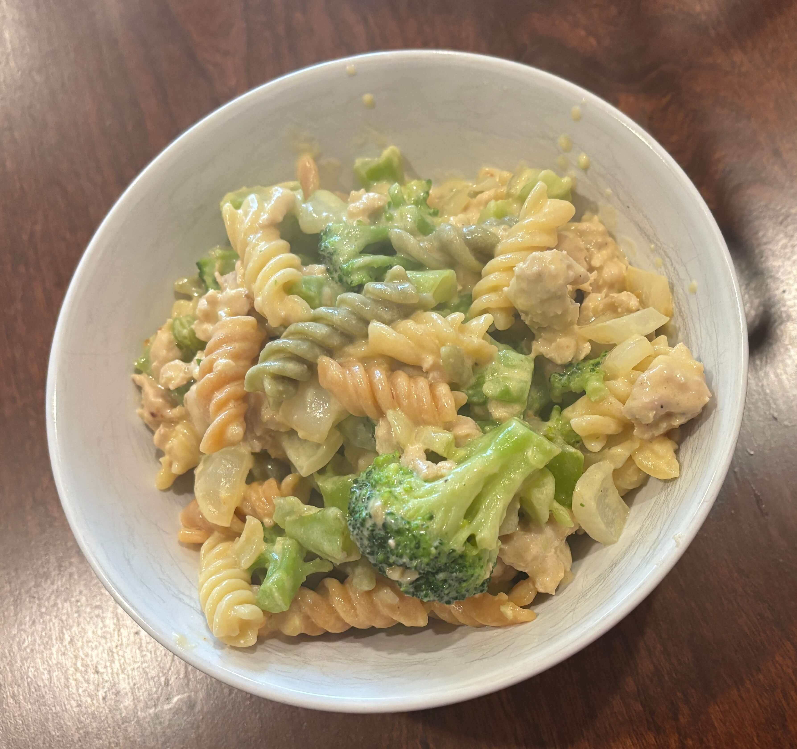

Home
Mac and Cheese

6 servings
Ingredients
- 7 1/4 oz Rotini Pasta
- 1 lb ground chicken
- 1/2 tsp organic garlic powder or minced garlic
- 1/2 tsp organic onion powder or minced onions
- salt
- 1/4 tsp black pepper
- 2 cups broccoli florets
- 8 oz Cheddar Cheese Sauce
- 1/2 cup sour cream
- 1 cup shredded sharp cheddar cheese
- 1 1/4 cups 2% milk
Steps
- Cook pasta per package directions.
- While pasta is cooking, add chicken, garlic powder, onion powder, black pepper, and salt to saute pan on MED-HIGH. Cook, stirring to break up pieces, about 5 min until cooked through. Set aside.
- If using minced onion/garlic add to pan while broccoli is cooking and chicken is set aside.
- Cook broccoli per package directions; set aside.
- Strain pasta; return to stockpot on LOW.
- Add cheese packets, sour cream, shredded cheddar, and milk to stockpot with pasta. Stir frequently to fully incorporate ingredients.
- Add warmed broccoli and cooked chicken; stir until combined and warmed through.